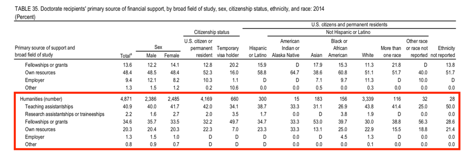

The main aim of a PhD position is to write the PhD thesis: this should be a substantial, independent, piece of research – a supervisor or committee periodically advises and evaluates the work done by the PhD candidate. At the end, the thesis is submitted and there is a defense.
Depending on the country, there are different conditions and processes:
- Status
- Length
- Expectations
- Final examination
Status
PhD candidates can be considered 'students' or 'employees'. This is not only a matter of wording, but it also entails different financial situations.
The possibility of access different funding streams might differ between national and international students. International students need also to comply to Visa requirements (which might entail a minimum earning requirement).
- In the US and UK systems, PhDs are considered students: as such they can have access to student loans (which they will then need to pay back), student bursaries, external funding (either for PhDs or working for a PI on a project). Self-funding is quite common in the humanities.

Source: Data from 2014 on funding sources for US PhD students - note how the majority of them, ca.40% was funded through teaching contracts (which are renewed on a semester/yearly basis), ca,35% was funded through research fellowships (i.e. grant for their own projects), ca.20% was self-funded, and ca. 2% was funded to work on other PI’s projects. Note also how these values change for non-US citizens. -
In Italy, there is an entry exam for PhD programmes (consisting of PhD proposal; written exam on the subject – e.g. history; and oral examination with a committee): the number of PhD entering a programme is established in advance, and at least 50% of the places are funded. Candidate who win a place, but without funding, will often work outside of the university.
Candidates, both funded or not-funded, might also work on their supervisors’ projects. - In most Nordic countries, PhDs are considered jobs – as such they have a fixed pay, contributions, and precise job contracts. Note that this, in turn, affects also the tax situation.
Length
There are systems with strict deadlines for completing a PhD; systems which are more flexible; and systems which divide the PhD in different steps, with different timelines.
For example:
- UK: the PhD should be completed within 3 years if full-time; 6 years if part-time. There is the possibility of applying for interruptions (serious illness; pregnancy), so to ‘stop the clock’ and the possibility of applying for a 1 year extension. Thus, full-time PhDs take maximum 4 years (3 year + 1 year extension) to write the thesis. Subsequently, they might need to wait a few months for the examination, after which they can get minor or major corrections (up to 1 year). Once the corrections are accepted, the PhD is awarded. Considering that British students start university at 18 and MA last 1 year, is it possible for them to finish a PhD at 25 years old, something that it is mostly possible only within this system.
- EU funding for PhDs (via Marie Curie training networks) is also for 3 years. For this type of funding, there is a mobility requirement for candidates (i.e. they cannot enroll in the same place where they did the MA and/or they live, but they need to move country).
- Italy: the deadline is also 3 years.
- US: potential candidates enroll in a MA programme and need to complete coursework before having a qualification exam. If they pass, they become ABD candidates (All But Dissertation), and they will have to submit the thesis within a certain deadline. This means that US programmes can take longer than UK ones.
- In Sweden, Denmark, and the Netherlands PhDs are considered ‘jobs’, with precise contract lengths.
Final examination
Once the PhD candidates submits its thesis, there is still a final examination.
In the UK, the final examination, called Viva (from the Latin ‘ex viva voce’), includes a commission of two examiners: an internal and an external one. Both will have read the thesis in details, written a report about it, and they then question a candidate for 1-3 hours (in exceptional cases, it can be also a longer examination); it is usually a closed doors examination. The outcome can be: pass without corrections (5% of candidates get this); pass with minor corrections (which can vary from a couple of days to a few months); pass with major corrections (e.g. more than six months); major corrections and resubmit with new viva; fail (ca 5% of candidates). If a candidate fail the viva, they can still be awarded a master by research (MPhil).
Most countries tend to have a public defence in front of a commission, in which the candidate is asked to present the thesis and is then questioned. There might be requirements about the presence of international scholars in the commission. This happens, e.g. in the US, Netherlands, Spain, Italy.
In Finland there is also a public defence, with at least an international committee member. I am citing it here for some fun relief: after the defence, Finnish PhDs receive a sword!
Australia is a particular case: here there is no defence, because of the interest in involving international examiners (who cannot regularly go to Australia). Examiners are sent a copy of the thesis and need to write a report about it, with a final recommendation. Based on that, the internal head of committee establish the level of corrections and whether the thesis can be awarded.
In Germany, after the defence, PhDs must publish the thesis in order to get the PhD awarded. This means that ‘the monograph’ is still hugely important in the German context and German PhDs are expected to publish their thesis much quicker (and with less substantial changes) than their international counterparts.
Other considerations
In Europe, it is possible to get European doctorates: this means that the candidate has two supervisors, in two different countries, and spends his time between these two countries (e.g. at least one year in the other country).
In Spain, it is possible to get a European mention for a PhD, which means spending a shorter amount of time in another country and demonstrating internationalization through a series of benchmarks.
A stay-abroad period is common also for certain funders (Marie Curie ITN and national funders who require it); this can vary between 1-3 months or longer, depending on the specific conditions.